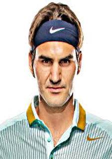

#1
|
Rafael Nadal
- Birthday:June 03,1986
- Age:31
- Birthplace:Manacor,Spain
- Plays:Left-Handed Two-Handed Backhand
|

|
#2
|
Andy Murray
- Birthday:May 15,1987
- Age:30
- Birthplace:London,England
- Plays:Right-Handed Two-Handed Backhand
|
|
#3
|
Roger Federer
- Birthday:August 8,1981
- Age:36
- Birthplace:Basel,Switzerland
- Plays:Right-Handed One-Handed Backhand
|

|
#4
|
Stan Wawrinka
- Birthday:May 3,1985
- Age:32
- Birthplace:St.Bathelemy,Switzerland
- Plays:Right-Handed One-Handed Backhand
|
|
#5
|
Novak Djokovic
- Birthday:May 22,1987
- Age:30
- Birthplace:Belgrade,Serbia
- Plays:Right-Handed Two-Handed Backhand
|
|